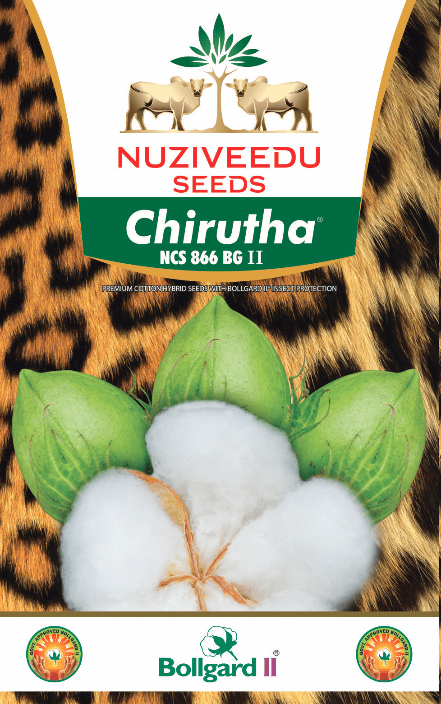

| Morphological Characters | |
|---|---|
| Hybrid Character: | Chirutha BG II (NCS-866 BG II) |
| Plant Height: | Tall |
| Reaction to Major Pests: | Resistant to American Bollworm, Pink Bollworm and Spotted Bollworm and Spodoptera. Tolerant to sucking pests, Jassids and Whitefly |
| Boll Shape & Size: | Ovate and very large |
| Quality of Produce: | Ginning%: 33.0 - 34.0 Staple Length: > Extra Long ≥ 32.5mm Strength: 25.0 - 28.0 g/tex Micronaire: 3.0 - 3.9 |
| Reaction to Stress: | Suitable for varied agro-climatic conditions and drought tolerant |
Special Features/USPs:
|
|